How to use this lesson
§0 · From last time. Sherpa is one agent. For HSBC's complex breaks (1% of volume, 10% of revenue impact), one agent isn't enough — we need specialists and a coordinator.
Business Scenario
HSBC, novel break. A multi-counterparty FX swap with a settlement chain across three time zones. Sherpa wanders, hits its 8-step cap, returns "unknown."
"This needs three specialists: an FX expert, a settlement-chain analyst, a regulatory check. Plus someone to coordinate. Can we build that as agents?"
Bridge to Topic
Multi-agent systems shine when sub-tasks are specialised and parallelisable. Wrong shape and you get worse performance than single-agent. The topology choice determines which.
Mind Map

Mermaid source
mindmap
root((Topologies))
Orchestrator-Worker
One coordinator
Many workers
Fan-out fan-in
Hierarchical
Tree of agents
Sub-coordinators
Recursive
Peer-to-peer
No central
Direct comms
Hard to debug
Swarm
Many small
Emergent behavior
Game-AI style
Elaboration
4.1 Orchestrator-worker (the production default)
One "orchestrator" agent reads the task, decomposes it, dispatches to N "worker" agents in parallel, aggregates results. Workers don't talk to each other.
Pros: simple, debuggable, scales well, matches Plan-and-Solve naturally. Cons: orchestrator is a single point of failure; bottleneck on synthesis.
4.2 Hierarchical
A tree of orchestrators. Top-level decomposes coarsely; sub-orchestrators decompose finely; leaves do work. Useful for tasks with natural multi-level structure (large research projects, multi-team workflows).
Pros: handles scale; specialisation per level. Cons: depth multiplies latency; errors compound.
4.3 Peer-to-peer
Agents communicate directly with each other. No central coordinator.
Pros: no single point of failure; emergent capabilities. Cons: nearly impossible to debug; coordination cost can dominate.
Use only when the task genuinely requires symmetric interaction (e.g., negotiation, debate). For most production tasks, orchestrator-worker is the right shape.
4.4 Swarm
Many small, simple agents with local rules; complex global behaviour emerges. Used in game AI, robotics. Rare in business agents because behaviour is hard to specify.
4.5 Choosing topology
if sub-tasks are independent and parallelisable:
orchestrator-worker
elif sub-tasks have multi-level decomposition:
hierarchical
elif sub-tasks require symmetric interaction:
peer-to-peer or debate
else:
single agent
Problem Statement
Design a multi-agent system for HSBC's novel FX-swap breaks:
- Identify specialists needed.
- Choose topology.
- Sketch the orchestration logic.
Solution Walkthrough
Orchestrator-worker:
- Orchestrator: decomposes the break into 3 sub-investigations.
- FX expert worker: validates FX leg pricing against market data.
- Settlement-chain worker: traces the cross-time-zone settlement path.
- Regulatory worker: checks against applicable jurisdiction rules.
- Orchestrator aggregates: if any worker flags an issue, the break is escalated to human.
Cost: ~5× single-agent cost (orchestrator + 3 workers + synthesis). Worth it because novel breaks have outsized revenue impact and humans currently take 45 minutes each.
Mathematical Foundation
7.1 Coordination overhead
For N agents:
- Orchestrator-worker: O(N) messages
- Hierarchical (balanced tree): O(N) messages
- Peer-to-peer: O(N²) messages
Peer-to-peer's quadratic cost kills it past ~5 agents.
7.2 Speedup vs N
For independent sub-tasks: linear speedup until network/orchestrator bottleneck. For coupled sub-tasks: speedup capped by critical path (Amdahl).
Technical Deep-Dive
8.1 The orchestrator's prompt
Should be deliberately narrow: only the decomposition logic. Don't put domain knowledge in the orchestrator; that belongs in workers. Orchestrator drift is a top failure mode if the orchestrator starts "helping" with worker tasks.
8.2 Worker specialisation
Each worker gets:
- A focused system prompt (its specialty)
- A subset of tools (only what it needs)
- A bounded budget (max steps per worker)
Scope-restriction makes each worker reliable. Wide-scope workers behave like a worse single agent.
8.3 The synthesis step
After workers report, the orchestrator synthesises. This step is high-leverage and often gets undersized. Give it explicit instructions on conflict resolution: "if two workers disagree, prefer the one with higher confidence; if both high confidence, escalate."
8.4 Specific signals to switch from single-agent to orchestrator-worker
Don't multi-agent on instinct. Use these objective triggers:
| Signal | Threshold | Reason multi-agent helps |
|---|---|---|
| Single-agent step-cap hits | > 15% of tasks | Agent is wandering; sub-task decomposition would scope-restrict |
| Tool-set size for one agent | > 25 tools | Wrong-tool selection rate climbs; per-worker tool subsets cut it |
| Context length exceeds | 60% of model max | Specialisation lets each worker see only relevant context |
| Per-task latency budget | < average task latency | Parallelism via independent workers compresses critical path |
| Expert-rule sets that don't compose well | 3+ distinct rule books | Each becomes a specialist worker; orchestrator routes |
If you don't have at least two of these signals: stay single-agent. The complexity cost (Lesson 6.4) outweighs the benefit.
8.5 The "specialist supervisor" pattern (more common than pure delegation)
Most production "multi-agent" systems aren't true orchestrator-worker. They're a supervisor with specialist consultants:
// Specialist supervisor pattern
async function classifyComplexBreak(breakId: string): Promise<Classification> {
const supervisor = new ReActAgent(SUPERVISOR_PROMPT, supervisorTools);
// Supervisor is a normal ReAct agent. Its tools include consulting specialists.
return supervisor.run({
breakId,
consultants: {
fxExpert: createSpecialist("fx", fxTools, FX_PROMPT),
settlementExpert: createSpecialist("settlement", setTools, SET_PROMPT),
regulatoryExpert: createSpecialist("reg", regTools, REG_PROMPT),
},
});
}
Differences from pure orchestrator-worker:
- Supervisor decides whether to consult, which specialist, and when to stop consulting — dynamically.
- Specialists are invoked (like tools), not dispatched (like jobs).
- Supervisor maintains the conversation; specialists are stateless per consultation.
When to prefer this over pure orchestrator-worker:
- The set of needed specialists is dynamic (you don't know upfront which to call).
- Specialists' answers may prompt new questions the supervisor needs to ask.
- The synthesis is iterative, not one-shot.
When pure orchestrator-worker is better:
- All specialists need to run regardless (parallelism wins).
- Sub-tasks are heavyweight (you want fan-out, not pull).
8.6 Operational considerations the topology question hides
| Concern | Single-agent | Orchestrator-worker | Specialist supervisor | Hierarchical |
|---|---|---|---|---|
| End-to-end latency | LLM-call serial | Critical path = slowest worker | Sum of consultations | Sum across depth |
| Debugging | One trace | One trace per sub-job + orchestrator trace | One trace with nested consultations | Tree of traces |
| Observability cost | 1× | 1× orchestrator + N× workers | 1× supervisor + M× specialists | Exponential in depth |
| Cost per task | $c$ | $1.2c$ to $3c$ | $1.5c$ to $4c$ | $5c$ to $20c$ |
| Failure modes | Loop, wrong-tool, hallucination | + bad decomposition, lost handoff, partial failure | + spurious consultation, supervisor drift | + cascading failure across levels |
The "right" topology depends on which failure modes you're willing to accept, not just on capability.
8.7 Worked example: HSBC's novel FX swap, end-to-end
A real-shape example (numbers illustrative). The break: cross-currency basis swap, USD/JPY/EUR three-way, settles across Tokyo/London/New York, ~$45M notional, broke at the JPY leg by ~$1.2M after counterparty refused settlement.
Topology chosen: specialist supervisor (more flexible than pure orchestrator-worker for this case).
Supervisor's trace (compressed):
Thought: Three-currency basis swap. The FX, settlement, and regulatory dimensions
all need investigation. Start with regulatory — if a jurisdiction is
the blocker, FX/settlement analysis is moot.
Action: consult(regulatoryExpert, "Are there jurisdictional issues with this
counterparty + currency mix as of trade date?")
Observation: { conclusion: "no_issue", confidence: 0.9, evidence: [...] }
Thought: Regulatory clean. Now FX leg pricing.
Action: consult(fxExpert, "Was the JPY leg priced consistently with market on
trade date?")
Observation: { conclusion: "issue", confidence: 0.85,
detail: "JPY priced at 158.4 vs market 158.7, ~$340k discrepancy" }
Thought: FX off by ~$340k. But break is ~$1.2M. Need settlement chain check.
Action: consult(settlementExpert, "Trace the JPY leg settlement chain.
Was any leg failed or reversed?")
Observation: { conclusion: "issue", confidence: 0.9,
detail: "Tokyo leg failed at 09:14 JST; auto-reversed at 09:42;
counterparty refused re-submission" }
Thought: Two issues identified — FX mispricing (~$340k) and settlement failure
(~$860k from refusal). Sum matches break. High confidence on cause.
Action: synthesise(...)
Answer: { classification: "settlement_failure_with_pricing_error",
confidence: 0.88, recommended_action: "escalate_to_FX_desk_and_ops",
evidence_chain: [3 consultant reports] }
Cost: 1 supervisor call + 3 specialist calls × ~5 LLM-calls each + 1 synthesis = ~17 LLM calls, ~$0.18.
Compared to:
- Single-agent (Sherpa v5) on same break: cap hit at 8 calls, returned "unknown", $0.06 wasted.
- Pure orchestrator-worker (decompose upfront into 3 fixed jobs): would have run all three even when regulatory came back clean, $0.24.
The supervisor pattern saved $0.06 vs orchestrator-worker by not consulting regulatory in depth once the first response was clean, while still solving what single-agent couldn't. The pattern matters more than the dial setting.
What This Unlocks
- 6.2 covers the inter-agent communication contracts.
- 6.3 covers when to add debate/voting.
- 6.4 catalogues the anti-patterns.